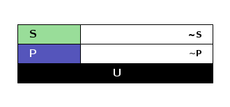
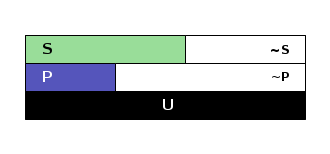
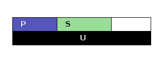
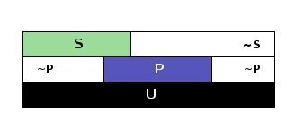
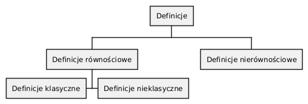
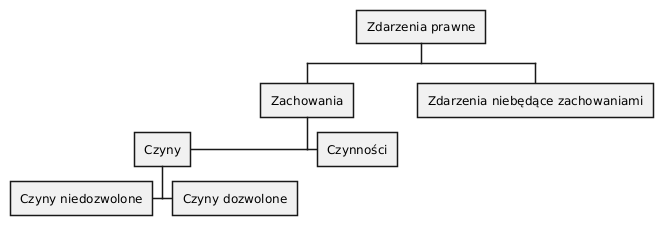

Logika - konspekt wykładu (’23/24)
Spis treści
- 1. Wykład 1
- 2. Wykład 2
- 3. Wykład 3
- 4. Wykład 4
- 4.1. Zdanie
- 4.2. Funktory prawdziwościowe
- 4.2.1. Wartości logiczne funktorów prawdziwościowych
- 4.2.2. Podstawowe zasady myślenia
- 4.2.3. Definicja implikacji przy pomocy alternatywy i negacji
- 4.2.4. Definicja implikacji przy pomocy koniunkcji i negacji
- 4.2.5. Zadanie
- 4.2.6. Bezprawne samouwolnienie
- 4.2.7. Tautologia, kontrtautologia
- 4.2.8. Turing Complete
- 5. Wykład 5
- 6. Wykład 6
- 7. Wykład 7
- 8. Wykład 8
- 9. Wykład 9
- 10. Wykład 10
- 11. ŚCIĄGA: Symbole logiczne
1. Wykład 1
1.1. Sprawy formalne i organizacyjne
1.1.1. Ogólne
- Kod teams:
inf2zd0 - Gdzie znajdę ten materiał: https://github.com/szczerbowski/dydaktyka
- Jak korzystać z tego dokumentu:
- jest to jedynie uzupełnienie wykładu i podręcznika
- przed każdym wykładem dokument jest aktualizowany - pamiętaj, aby sprawdzić najnowszą wersję
- Warunki zaliczenia.
- Dyżur - informacja jest na https://www.uni.lodz.pl/pracownicy/jakub-szczerbowski
1.1.2. Literatura
- literatura obowiązkowa:
- Z. Ziembiński, Logika Praktyczna, Warszawa 2004 (albo inne wydanie).
literatura uzupełniająca:
- T. Bekrycht, Logiczne podstawy prawoznawstwa, Warszawa 2010,
https://www.academia.edu/21615638/LOGIKA_skrypt_Bekrycht.
- J. Stelmach, B. Brożek, Metody Prawnicze, rozdziały I, II, III pkt.
1-2.
- J. Wajszczyk, Jestem więc myślę, Warszawa 2003.
- A. Malinowski, S. Lewandowski, H. Machińska J. Petzel, Logika dla Prawników, Warszawa 2009.
1.1.3. Przerwy
sobota: 2x10 min. (11:10-11:20, 12:00-12:10)
1.1.4. Nieobecności
W przypadku nieobecności na wykładzie należy samodzielnie nauczyć się materiału na podstawie literatury podanej powyżej.
1.2. Wprowadzenie
- Dowcip logiczny: Trzech logików wchodzi do baru. Barman pyta: „Czy wszyscy chcecie piwo?” Odpowiadają po kolei: 1: Nie wiem, 2: Nie wiem, 3. Tak.
- Logika – nauka o sposobach jasnego i ścisłego formułowania myśli, o regułach poprawnego rozumowania i uzasadniania twierdzeń.
1.2.1. Przegląd treści
- Ogólne wiadomości o języku.
- Nazwy - dowiem się czym się różni książka od biblioteki i Sejm od posłów.
- Stosunki pomiędzy zakresami nazw - dowiem się, że jestem nie-krową i nie-PZPR.
- Definicje - dowiem się ile cech wspólnych ma śliwka i kosiarka do trawy oraz dlaczego pomimo ich tak wielkiej ilości nadal potrafię je rozróżnić.
- Podział logiczny - dowiem się jak napisać przepis przyznający dofinansowanie gospodarstwom domowym, który po wejściu w życie przyprawi urzędników o ból głowy.
- Zdanie - dowiem się co to jest prawda i dlaczego „Która godzina?” nie jest zdaniem w sensie logicznym.
- Funktory prawdziwościowe - dowiem się dlaczego „p lub nie-p” oraz pogramy wspólnie w grę komputerową.
- Relacje - dowiem się, dlaczego człowiek człowiekowi wilkiem, a kiwi kiwi kiwi.
- Wypowiedzi oceniające i normy - dowiem się, z czego zbudowane jest prawo (i nie tylko).
- Wypowiedzi modalne - dowiem się, co to znaczy przedmiot fakultatywny (i dlaczego kradzież batonika jest też fakultatywna).
- Pytania i odpowiedzi - dowiem się, co to znaczy odpowiedzieć na pytanie.
- Przyczyny nieporozumień - dowiem się, dlaczego czasem ludzie się nie rozumieją.
- Uzasadnianie bezpośrednie - dowiem się o bezpośrednich spostrzeżeniach w przedmiocie rzeczywistości.
- Dedukcja - może się okazać, że Sherlock Holmes nie zawsze stosował dedukcję.
- Redukcja i indukcja - dowiem się jak nie zostać indykiem.
- Myślenie z góry postanowionymi zadaniami - dowiem się, że czasem myślenie służy konkretnym celom.
- Prawdopodobieństwo – dowiem się, dlaczego nie powinienem martwić się tym, że co drugie dziecko rodzi się Azjatą, planując rodzinę.
- Umiejętność przekonywania - dowiem się jak stosować logikę w sporze i wykrywać nielojalne działania przeciwnika.
- Praca myślowa prawnika - dowiem się jak stosować reguły myślenia w zadaniach typowych dla zawodów prawniczych.
1.3. Ogólne wiadomości o języku
1.3.1. Znak i kategorie syntaktyczne
Semiotyka (ogólna nauka o znakach): (1) semantyka — nauka o stosunku pomiędzy znakiem a tym do czego znak się odnosi; (2) syntaktyka — nauka o rodzajach znaków i regułach wiązania ich w znaki złożone; (3) nauka zajmująca się zagadnieniami stosunków pomiędzy znakami a wypowiadającym je lub odbierającym człowiekiem.
Logika a prawda. Co to jest prawda? Co to jest zdanie prawdziwe? Czy każde zdanie może być prawdziwe?
Logika formalna zajmuje się poprawnymi rozumowaniami.
- Przykłady zdań
- Studenci uczą się pilnie.
- Warszawa jest stolicą Polski.
- Robert: W połowie drogi mojego żywota pośród ciemnego znalazłem się lasu.
- Stateczny, pulchny Buck Mulligan wynurzył się z wylotu schodów, niosąc mydlaną pianę w miseczce, na której leżały skrzyżowane lusterko i brzytwa.
- Wrzątek zawsze jest gorący.
- Ziemia jest płaska.
- Słońce świeci nocą.
- W konkursie chopinowskim wygrał najlepszy pianista.
- Gdzie leży mój długopis? - nie jest to zdanie w sensie logicznym
- Trójkąt ma cztery boki.
- Siedzę na niebieskim fotelu.
- Znak
- Pojęcie znaku - układ rzeczy + reguły znaczeniowe.
- Czy zawsze są to znaki słowne?
- Znaczenie kontekstu: biała flaga, podanie ręki a umowa, przysięga małżeńska.
- Znak a symptom, objaw — jest to coś innego.
- Język — system obejmujący zbiór znaków słownych. Istnieją języki naturalne i języki sztuczne. Żargon — w tym żargon prawniczy: domieszka do języka naturalnego.
- W różnych językach słowa mogą mieć to samo znaczenie i brzmieć inaczej, albo na odwrót.
- Naturalnie powstają nowe słowa oraz nowe znaczenia (np. nowe znaczenie słowa dzban).
- Język wyróżnia zarówno zasób słów, jak i jego składnia. Istnieją nieprzetłumaczalne wprost zwroty.
- Język prawny a język prawniczy.
- Metajęzyk
- Przykład
- Zdanie poniżej jest prawdziwe.
- Zdanie powyżej jest fałszywe.
- Wyjaśnienie
- Metajęzyk: język, który mówi o języku.
- Wypowiedź w języku pierwszego stopnia (języku przedmiotowym): Pada deszcz.
- Wypowiedź w języku drugiego stopnia (metajęzyku w stosunku do języka pierwszego stopnia): Jan powiedział, że pada deszcz.
- Wypowiedź w języku trzeciego stopnia (metajęzyku w stosunku do języka drugiego stopnia): Marcin powiedział, że Jan powiedział, że pada deszcz.
- Przykład
- Kategorie syntaktyczne
- Zdania, nazwy i funktory.
- Zdanie jest całkowicie samodzielną kategorią języka opisowego. Zdanie głosi więc, że jest tak a tak: Granit jest skałą magmową. Sędzia opuścił salę rozpraw.
- Nazwa — coś co nadaje się na podmiot lub na orzecznik orzeczenia imiennego w zdaniu: prawnik, planeta, sędzia.
- Funktor to wyraz lub wyrażenie (leks), które nie jest ani nazwą, ani zdaniem, ale w połączeniu z nimi tworzy bardziej złożoną całość.
- Funktory dzielimy na zdaniotwórcze, nazwotwórcze i funktorotwórcze. Wyrazy lub wyrażenia, które funktor wiąże w większą całość, nazywamy argumentami funktora.
Zdania oznacza się symbolicznie z. Nazwy oznacza się symbolicznie n.
Przykłady funktorów:
- funktor nazwotwórczy od (jednego) argumentu nazwowego: zielona gęś: \(\frac{n}{n}\)
- funktor nazwotwórczy od dwóch argumentów nazwowych: most nad rzeką: \(\frac{n}{nn}\)
- funktor zdaniotwórczy od argumentu nazwowego: sędzia śpi: \(\frac{z}{n}\)
- funktor zdaniotwórczy od dwóch argumentów zdaniowych: chociaż w Warszawie pada deszcz to w Łodzi świeci słońce: \(\frac{z}{zz}\)
- funktor funktorotwórczy od argumentu funktorowego: sędzia (n) głęboko śpi \(\frac{z}{n}\) : Czym zatem, jest słowo głęboko? Tym: \(\frac{\frac{z}{n}}{\frac{z}{n}}\)
Zastępowalność wyrażeń w tej samej kategorii syntaktycznej. Przykłady:
- Sędzia głęboko śpi. Sędzia głęboko słucha.
- Piękna melodia. Zielona melodia.
- Rdza niszczy metal. Rdza podziwia metal.
Ale już nie: zielona gęś → nad gęś
- Role semiotyczne wypowiedzi
- Rola opisowa
Wypowiedź opisuje rzeczywistość.
- Świeci słońce.
- W lipcu w Polsce jest zima.
- Rola ekspresywna
Komunikuje przeżycia, przemyślenia, stan wewnętrzny.
- Moja poranna kawa była ekstatycznie smaczna!
- Ach, świeci słońce!
- Ten obraz jest przepiękny.
- Rola sugestywna
Ma wywołać w odbiorcy komunikatu jakieś zachowanie.
- Janku, o godz. 9 masz być w łóżku!
- Nie jestem pewien, że podoba mi się ta twoja nowa koszulka.
- Kto przekracza dozwoloną prędkość podlega karze…
- Palenie zabija!
- Rola performatywna
Wypowiedź wywołuje skutki konwencjonalne.
- Złożenie przysięgi lub ślubowania.
- Nakładam na Pana mandat karny w wysokości 500 zł.
- Rola opisowa
2. Wykład 2
2.1. Nazwy
- Nazwa jako podmiot w zdaniu.
- Nazwy proste i nazwy złożone.
2.1.1. Nazwy konkretne i nazwy abstrakcyjne
- konkretne
- znaki rzeczy lub osób, albo czegoś co można sobie jako byt fizyczny wyobrazić
- sędzia, człowiek, łobuz, biały stół; feniks
- abstrakcyjne
- takie, które nie są nazwami konkretnymi - nie możemy sobie ich wyobrazić jako rzecz lub osobę
- białość, kradzież, braterstwo
Mogą pojawiać się wątpliwości, czy mamy do czynienia z nazwą konkretną czy abstrakcyjną:
- W sprawie Jana Kowalskiego zapadł długo oczekiwany wyrok.
- Po zamknięciu rozprawy sąd wydaje wyrok.
2.1.2. Desygnaty nazw
- Desygnatem nazwy jest przedmiot, o którym można nazwę prawdziwie orzec.
- Wobec książki można powiedzieć to jest książka i będzie to prawda; nie można jednak powiedzieć to jest pies. Podobnie pies nie będzie desygnatem nazwy książka.
2.1.3. Nazwy indywidualne i nazwy generalne
- nazwy indywidualne oznaczają poszczególne przedmioty: miasto Poznań; Zofia spóźni się na wykład.
- nazwy generalne oznaczają przedmioty dzielące jakieś wspólne cechy: miasto wojewódzkie; Zofia ma imieniny 15 maja.
- Treść nazwy generalnej
- Cechy
Cechy samochodu:
- konstytutywne (wystarczają aby odróżnić przedmioty bedące desygnatami nazwy od innych przedmiotów):
- pojazd lądowy,
- posiadający koła,
- używany do przewozu ludzi i towarów,
- konsekutywne:
- jest rzeczą,
- waży powyżej 1 kg,
- posiada metalowe elementy.
- konstytutywne (wystarczają aby odróżnić przedmioty bedące desygnatami nazwy od innych przedmiotów):
- Supozycje
Nazwa generalna może być używana w różnych rolach znaczeniowych nazywanych supozycjami:
- supozycja prosta: zając schował się w krzakach
- supozycja formalna: zając jest ssakiem
- supozycja materialna: zając składa się z dwóch sylab
- Cechy
2.1.4. Zakres nazwy
- Zakres nazwy to klasa wszystkich desygnatów danej nazwy.
- Ze względu na to ile desygnatów ma nazwa możemy je podzielić na:
- nazwy ogólne - mają więcej niż jeden desygnat
- nazwy jednostkowe - mają jeden desygnat
- nazwy puste - nie mają desygnatów (czy zatem wszystkie nazwy puste znaczą to samo?)
- człowiek, który ma 4 metry wzrostu
- czworoboczny trójkąt
- szafa w mojej kieszeni
2.1.5. Nazwy zbiorowe
- Nazwy zbiorowe to nazwy agregatów przedmiotów. Nie przysługują poszczególnym przedmiotom wchodzącym w skład tego agregatu.
- Biblioteka jest nazwą zbiorową — oznacza zbiór książek. Czy przedmiot jakim jest książka jest desygnatem nazwy biblioteka?
2.1.6. Ostrość nazw
- Nazwa nieostra — są takie przemioty, o których nie wiadomo czy są desygnatami danej nazwy
- leń : leń 1, leń 2 … tacy, o których nie wiadomo czy są leniami… nie-leń
- wysoki mężczyzna
Nazwy ostre:
- pies
- π
2.2. Stosunki pomiędzy zakresami nazw
UWAGA: wersja rozszerzona względem podręcznika!
2.2.1. Zamienność

2.2.2. Podrzędność S względem P
2.2.3. Nadrzędność S względem P

2.2.4. Przeciwieństwo

2.2.5. Niezależność

2.2.6. Sprzeczność
2.2.7. Podprzeciwieństwo
2.2.8. Definicje (źródło: Wikipedia, hasło Nazwa):
- Nazwa P jest zamienna względem nazwy Q, gdy denotacje tych nazw pokrywają się, tj. gdy każdy desygnat nazwy P jest zarazem desygnatem nazwy Q, a każdy desygnat nazwy Q jest zarazem desygnatem nazwy P. Zamienne są np. nazwy "ziemniak" i kartofel".
- Nazwa P jest podrzędna względem nazwy Q wtedy, gdy denotacja nazwy P zawiera się w sposób właściwy w denotacji nazwy Q, tj. gdy wszystkie desygnaty nazwy P są zarazem desygnatami nazwy Q. Nazwa "krowa" jest podrzędna względem nazwy "zwierzę".
- Nazwa P jest nadrzędna względem nazwy Q, gdy denotacja nazwy Q zawiera się w sposób właściwy w denotacji nazwy P, tj. gdy wszystkie desygnaty nazwy Q są zarazem desygnatami nazwy P. Nazwa "rzeka" jest nadrzędna względem nazwy "rzeka, nad którą od wieków żyją krowy".
- Nazwa P jest przeciwna względem nazwy Q, gdy denotacja nazwy P wyklucza się z denotacją nazwy Q i zarazem suma denotacji nazw P i Q zawiera się w sposób właściwy w uniwersum przedmiotów. Nazwa "krowa" jest przeciwna względem nazwy "rzeka".
- Nazwa P jest niezależna względem nazwy Q, gdy denotacje nazw P i Q krzyżują się, a suma tych denotacji zawiera się w sposób właściwy w uniwersum przedmiotów. Nazwa "krowa" jest niezależna względem nazwy "czarno-białe zwierzę".
- Nazwa P jest sprzeczna względem nazwy Q, gdy denotacja nazwy P wyklucza się z denotacją nazwy Q i zarazem suma denotacji nazw P i Q pokrywa się z uniwersum przedmiotów. Nazwy "krowa" i "nie-krowa" są sprzeczne.
- Nazwa P jest podprzeciwna względem nazwy Q, gdy denotacje nazw P i Q krzyżują się, a suma tych denotacji pokrywa się z uniwersum przedmiotów. Nazwy "nie-krowa" i "zwierzę" są podprzeciwne.
3. Wykład 3
3.1. Definicje
Definicja realna: wypowiedź w języku pierwszego stopnia, która charakteryzuje przedmiot i tylko ten przedmiot.
Definicja nominalna: wypowiedź w języku drugiego stopnia, które informuje o znaczeniu definiowanego słowa: Wyraz kwadrat oznacza prostokąt, który ma wszystkie boki równe.
3.1.1. Przykłady definicji (podawane przez studentów)
- Odcinek to jest fragment prostej, który ma początek i koniec.
- Bursztyn to jest skamieniała żywica.
- Wiatr to poziomy ruch powietrza z wyżu do niżu.
- Oszustwo to jest wprowadzenie innej osoby w błąd albo wyzyskanie błędu lub niezdolności do należytego pojmowania przedsiębranego działania w celu osiągnięcia korzyści majątkowej.
3.1.2. Zadania definicji
- Definicja sprawozdawcza: składa sprawozdanie z tego, jak pewna grupa ludzi posługuje się wyrazem lub wyrażeniem: W języku polskim drugiej połowy XX-wieku wyraz księgarnia oznacza sklep, w którym sprzedaje się książki. W języku myśliwych wyraz farba oznacza krew zwierzęcia. W języku polskim wyraz czapka oznacza część garderoby noszoną na stopie.
- Definicja projektująca: ustala znaczenie jakiegoś wyrazu na przyszłość. Np.:
Dokumentem jest nośnik informacji umożliwiający zapoznanie się z jej
treścią. (art. 773 k.c.).
- Definicja projektująca może być konstrukcyjna (Ilekroć w ustawie jest mowa o przeciętnym konsumencie - rozumie się przez to konsumenta, który jest dostatecznie dobrze poinformowany, uważny i ostrożny) albo
- regulująca (Stan nietrzeźwości w rozumieniu tego kodeksu zachodzi, gdy: 1) zawartość alkoholu we krwi przekracza 0,5 promila albo prowadzi do stężenia przekraczającego tę wartość lub 2) zawartość alkoholu w 1 dm3 wydychanego powietrza przekracza 0,25 mg albo prowadzi do stężenia przekraczającego tę wartość.).
3.1.3. Budowa definicji
- Definicja równościowa: definiendum + zwrot łączący + definiens: Bursztyn to
kopalna żywica drzew iglastych.
- Definitio per genus et differentiam specificam (definicja klasyczna): A to takie B, które ma cechę C.
- Definicje nierównościowe. Np. występujące w geometrii (definicja przez postulaty).

Definicje w prawie (przykłady do omówienia): art. 10 § 1 k.c., art. 627 k.c.
- Art. 10. § 1. Pełnoletnim jest, kto ukończył lat osiemnaście.
- Art. 627. Przez umowę o dzieło przyjmujący zamówienie zobowiązuje się do wykonania oznaczonego dzieła, a zamawiający do zapłaty wynagrodzenia.
3.1.4. Poprawność definicji
- nieprzystosowanie definicji do słownika osoby będącej adresatem definicji (ignotum per ignotum): Krącitka to jest taka frutka, która ma piląga.
- definiens zawiera definiendum (idem per idem). Polak, to jest taki człowiek, który jest narodowości polskiej. Błędne koło pośrednie: Logika to nauka o logicznym myśleniu. Logiczny to taki, który jest zgodny z nauką logiki.
- definicja zbyt szeroka: Człowiek to ssak dwunożny.
- definicja zbyt wąska: Człowiek to ssak posługujący się mową i pismem.
3.2. Podział logiczny
Podział logiczny zakresu jakiejś nazwy N na zakresy A, B, C, D, E…
Całość dzielona (totium divisionis) i człony podziału (membra divisionis).
Polskie miasta:
- duże, małe i średnie; (komentarz: powinniśmy mieć kryteria zaliczenia miasta jako dużego, średniego lub małego; kryteria muszą być dobrze dobrane)
- stare i nowe; (podobnie jak powyżej)
- dwuwyrazowe i jednowyrazowe; (a co z Nowym Dworem Mazowieckim?)
- w górach, nad morzem, na równinach i na wyżynach; (a co z innymi terenami?)
- zaczynające się na literę a i zaczynające się na literę inną niż a (taki podział jest poprawny; inna sprawa, że niezbyt przydatny)
3.2.1. Poprawność podziału
Podział wyczerpujący i rozłączny - jakie ma cechy? Żaden desygnat nie może być zaliczony do dwóch członów podziału jednocześnie. Każdy desygnat może być zaliczony jakiegoś z członów podziału.
Podział dychotomiczny - podział według cech kontradyktorycznych:
- podmiot: podmiot będący podatnikiem VAT - podmiot niebędący podatnikiem VAT
- pies: pies mający cztery łapy - pies nie mający czterech łap
Niepoprawne podziały:
- oparte na niejednoznacznych kryteriach
- według przedziałów liczbowych, których granice się powtarzają: polskie rodziny: rodziny od 2 do 3 osób, rodziny od 3 do 5 osób, rodziny od 5 do 7 osób, rodziny 7 osobowe i większe.
3.2.2. Klasyfikacja

3.2.3. Wyróżnianie typów
Wyodrębnianie przedmiotów o interesujących nas cechach. Przykładowo z nazwy pies wyróżniamy typy takie jak wyżeł i spaniel.
4. Wykład 4
4.1. Zdanie
- Zdanie to wyrażenie stwierdzające, że jest tak a tak. Problem jednoznaczności wypowiedzi.
- Przykłady wyrażeń niebędących zdaniami w sensie logicznym, ale będących zdaniami w sensie gramatycznym: Zapal światło. W razie niebezpieczeństwa zbij szybę.
- Zdarzenia i stany rzeczy.
- Zdarzenie: rzecz lub osoba wykazywała w danym momencie własność X a w innym momencie jej nie wykazywała.
- Stan rzeczy: rzecz lub osoba wykazywała od momentu A do momentu B jakąś własność.
- Zdanie prawdziwe - opisuje rzeczywistość tak, jak się ona ma. Nie można wolą, teorią ani poglądem zmienić wartości prawdziwościowej zdania.
- Prawdziwość wynikająca z sensu użytych w nich słów; zdanie analityczne.
- Fałszywość wynikająca z sensu słów; zdanie wewnętrznie kontradyktoryczne.
- Zdania syntetyczne - nie da się poznać ich wartości logicznej za pomocą sensu zawartych w nich słów.
4.2. Funktory prawdziwościowe
4.2.1. Wartości logiczne funktorów prawdziwościowych
| p | q | ∼p | p ∨ q | p ⋅ q | p ⊃ q | p ⊥ q | p ≡ q | p ↓ q |
|---|---|---|---|---|---|---|---|---|
| 0 | 0 | 1 | 0 | 0 | 1 | 0 | 1 | 1 |
| 0 | 1 | 1 | 1 | 0 | 1 | 1 | 0 | 0 |
| 1 | 0 | 0 | 1 | 0 | 0 | 1 | 0 | 0 |
| 1 | 1 | 0 | 1 | 1 | 1 | 0 | 1 | 0 |
- Przykłady
- Negacja
Nieprawda, że na trawniku leży śnieg.
∼p p 1 0 0 1 - Alternatywa nierozłączna
Na trawniku leży śnieg lub jest lato.
p p ∨ q q 1 1 0 0 1 1 1 1 1 0 0 0 - Koniunkcja
Pada deszcz i ulica jest mokra.
p p ⋅ q q 1 1 1 0 0 0 1 0 0 0 0 1 - Alternatywa rozłączna
Pójdziemy na lody albo pójdziemy do kina.
p p ⊥ q q 0 0 0 0 1 1 1 1 0 1 0 1 - Implikacja
- Jeżeli pada deszcz to ulica jest mokra.
- Jeżeli (Zakopane jest stolicą Polski) to (Arystoteles był pierwszym człowiekiem na księżycu).
p p ⊃ q q 1 1 1 0 1 0 1 0 0 0 1 1 - Równoważność
Wtedy i tylko wtedy gdy pada deszcz to ulica jest mokra.
p p≡q q 1 1 1 0 1 0 1 0 0 0 0 1 - Binegacja
Ani nie pada deszcz ani nie pochodzę z Marsa.
p p↓q q 0 1 0 1 0 0 0 0 1 1 0 1
- Negacja
4.2.2. Podstawowe zasady myślenia
- T1: ∼ (p ⋅ ∼p) : zasada sprzeczności
- T2: p ∨ ∼(p) : zasada wyłączonego środka
- T3: p ≡ ∼ ( ∼ p ) : zasada podwójnego zaprzeczenia
4.2.3. Definicja implikacji przy pomocy alternatywy i negacji
p ⊃ q ≡ (∼ p) ∨ q
4.2.4. Definicja implikacji przy pomocy koniunkcji i negacji
p ⊃ q ≡ ∼ ( p ⋅ ∼ q )
4.2.5. Zadanie
Czy te zdania są prawdziwe?
- Jeżeli Ateny są stolicą Polski to Uniwersytet Łódzki ma siedzibę w Berlinie.
- Jeżeli Ateny są stolicą Polski to Robert Lewandowski jest piłkarzem.
- Jeżeli Ateny są stolicą Polski to mam w kieszeni chusteczkę.
- Jeżeli Warszawa jest stolicą Polski to Księżyc jest zrobiony z sera.
- Jeżeli Warszawa jest stolicą Polski to Albert Einstein opracował teorię względności.
- Nieprawda że (Warszawa jest stolicą Polski i nieprawda Einstein opracował teorię względności).
- (Nieprawda że, Warszawa jest stolicą Polski) lub Einstein opracował teorię względności.
- Ani Ateny są stolicą Polski ani UŁ ma siedzibę w Berlinie.
4.2.6. Bezprawne samouwolnienie
Art. 242. § 1. Kto uwalnia się sam, będąc pozbawionym wolności na podstawie orzeczenia sądu lub prawnego nakazu wydanego przez inny organ państwowy, podlega grzywnie, karze ograniczenia wolności albo pozbawienia wolności do lat 2. […] § 4. Jeżeli sprawca czynu określonego w § 1
- działa w porozumieniu z innymi osobami,
- używa przemocy lub
- grozi jej użyciem
albo uszkadza miejsce zamknięcia,
podlega karze pozbawienia wolności do lat 3.
4.2.7. Tautologia, kontrtautologia
4.2.8. Turing Complete
5. Wykład 5
5.1. Relacje (stosunki) pomiędzy przedmiotami
5.1.1. Wstęp
xRy
x R1 y - Adam jest wyższy od Piotra
y R2 x - Piotr jest niższy od Adama
x = y, y = z
kiwi kiwi kiwi
x R y
5.1.2. Relacje symetryczne, asymetryczne i nonsymetryczne
Jan jest małżonkiem Zofii.
Jan jest starszy od Zofii. x jest mniejszy od y, x jest większy od y, x jest brzydszy od y, x jest grubszy od y.
Jan kocha Zofię. x jest bratem y, x patrzy na y, x mówi do y.
5.1.3. Stosunek przechodni (tranzytywny), atranzytywny, nontranzytywny
- Stosunek tranzytywny: jeśli xRy i yRz to xRz.
- Stosunek atranzytywny: jeśli xRy i yRz to ∼ xRz.
- Stosunek nontranzytywny: jeśli xRy i yRz to xRz ⊥ (∼ xRz).
- zawiera - jest tranzytywny
- jest częścią - relacja tranzytywna
- jest matką - relacja atranzytywna: x jest matką y, y jest matką z ⊃ x nie jest matką z
- samodzielnie wychowywać - relacja atranzytywna
- jest krewnym - relacja nontranzytywna
- jest szefem - relacja nontranzytywna
- jest pracownikiem tej samej firmy - relacja nontranzytywna
- lubi - relacja nontranzytywna
- jest przyjacielem - relacja nontranzytywna
5.1.4. Stosunek spójny, porządkujący, równościowy i zwrotne
Przykładowy zapis:
- { 4, 1, 2, 3 }; R: <
- Stosunek spójny zachodzi w jednym lub drugim kierunku w danej klasie przedmiotów między każdym i innym dowolnie wybranym przedmiotem.
- {1, 1, 1, 1}, R: =
- {1, 2, 3, 1}, R: =<
- {1, 2, 3, 4}, R: <
- Stosunek porządkujący pozwala ustawić przedmioty w szeregu: asymetryczny, przechodni i spójny.
- { 4, 1, 2, 3 }, R: <
- { Adam lat 10, Weronika lat 12, Bronisław lat 64, Kunegunda lat 102 }, R: jest starszy(a)
- Stosunek zwrotny zachodzi pomiędzy każdym elementem w danej klasie przedmiotów a nim samym:
- { 4 , 5 , 9, 23 }, R: jest równe
- Stosunek równościowy: symetryczny, przechodni i zwrotny:
- { 4, 4, 4 } R: jest równe
- { Wojtek blondyn, Kasia blondynka, Alicja blondynka, Cezary blondyn }, R: ma taki sam kolor włosów jak
- { Skoda Octavia 1.9TDI, Audi A3 2.0TDI, BMW 330d }, R: jest na takie samo paliwo jak
- { Adam, Franciszek, Bartek }1 R: być bratem (1 - panowie są braćmi)
6. Wykład 6
6.1. Wypowiedzi oceniające i normy
- Wypowiedź oceniająca.
- Preferencje.
- Globalne oceny stanu rzeczy.
6.1.1. Rodzaje ocen
- ocena estetyczna
- ocena hedonistyczna
- ocena moralna
6.1.2. Normy postępowania
- Norma postępowania.
- Normy prawne, to normy postępowania, ale należy pamiętać, że zakres nazwy norma prawna jest podrzędny zakresowi nazwy norma postępowania.
- Wypowiedź dyrektywalna.
- Pojęcie postępowania
- zachowanie osoby zależne od jej woli
- Zakaz, nakaz:
- zakaz czynienia X to nakaz nieczynienia X; nakaz czynienia X to zakaz nieczynienia X.
- Normy mogą być:
- a) generalne, b) indywidualne;
- a) abstrakcyjne, b) konkretne.
- Przykłady
- Przykład normy generalnej i abstrakcyjnej: Kto zabija człowieka, podlega karze pozbawienia wolności na czas nie krótszy od lat 8, karze 25 lat pozbawienia wolności albo karze dożywotniego pozbawienia wolności - Każdemu i w każdych okolicznościach zakazuje się zabić człowieka.
- Przykład normy konkretnej i indywidualnej: Sąd Okręgowy w Warszawie … zasądza od Jana Kowalskiego kwotę 1000 zł na rzecz Adama Malinowskiego z odsetkami ustawowymi za opóźnienie…
- Przykład normy generalnej i konkretnej: Kto z uczestników wycieczki wróci dziś pierwszy do schroniska powinien rozpalić ogień.
- Przykład normy indywidualnej i abstrakcyjnej: Szeregowy Kowalski, gdy dostrzeżecie niebezpieczeństwo macie wszcząć alarm.
- Podporządkowanie normie
- Czy ma sens pytanie: Czy to prawda, że x powinien A?
- Obowiązywanie normy.
- Uzasadnienie tetyczne;
- uzasadnienie aksjologiczne.
6.2. Wypowiedzi modalne
- wzajemna definiowalność: musi robić to znaczy, że nie może nie robić ; może robić to znaczy, że nie musi nie robić
- interpretacje słów „musi” i „może”
- interpretacja logiczna - słowo „musi” oznacza pewien związek pomiędzy zdaniami; obwód okręgu o promieniu 1 cm musi mieć 2 pi cm; kwadrat musi mieć cztery boki
- interpretacja dynamiczna - fakt jest nieuchronny; ciało niepodparte musi spadać, Żołnierze bez pożywienia muszą w końcu przegrać.
- interpretacja aksjologiczna - aprobujemy stan A i nie godzimy się na to, aby stan przeciwny nie zachodził - Musisz płacić podatki. Jeśli jesteś bogatszy od innych to musisz płacić wyższe podatki. Musisz przestać palić papierosy, bo osierocisz swoje dzieci.
- interpretacja tetyczna - zrealizowanie stanu A jest nakazane normą: W końcu będziesz musiał wydać wyrok. Musisz zawiadomić prokuratora o tym, że próbowano Cię przekupić. Musisz płacić podatki.
- interpretacja psychologiczna - jesteśmy silnie przeświadczeni, że A: musi być A.
- ćwiczenie:
- Żołnierz musi nosić mundur na służbie.
- W terenie zabudowanym musisz jechać z prędkością poniżej 50 km/h.
- Sędzia może wydać wyrok a prokurator nie może wydać wyroku.
- Warszawa musi być stolicą Polski.
- Łódź musi być stolicą Polski.
- Adam może wyjść z domu. = Adam nie musi nie wychodzić z domu.
- Lecący samolot, w którym skończyło się paliwo, musi spaść.
- Modalności
- zdanie asertoryczne: Jest tak a tak. Na pasie startowym stoi samolot. Łódź jest położona w centralnej Polsce.
- zdanie apodyktyczne: Musi być tak a tak. Musisz nauczyć się logiki.
- zdanie problematyczne: Może być tak a tak. Logiki możesz uczyć się nawet w okresie świątecznym. Jutro możliwe są opady deszczu.
- Możliwość jednostronna i możliwość dwustronna
- Kwadrat musi mieć cztery boki. Czy kwadrat może mieć cztery boki?
- Kwadrat może mieć cztery boki. Adam może wyjść z domu. Rzecznikiem Praw Obywatelskich może być obywatel polski wyróżniający się wiedzą prawniczą, doświadczeniem zawodowym oraz wysokim autorytetem ze względu na swe walory moralne i wrażliwość społeczną.
- Jest możliwe zjeść kawałek pizzy. Jan może zjeść kawałek pizzy.
- Jest możliwe, że Lech Wałęsa był prezydentem Polski.
- Ziemia może być trzecią planetą od Słońca (możliwość jednostronna). Każdy dorosły Polak może głosować w wyborach prezydenckich (możliwość dwustronna - może przecież także nie głosować).
- Modalności normatywne
- nakaz osoba x musi postąpić w określony sposób
- zakaz osoba x nie może postąpić w określony sposób
- dozwolenie brak zakazu
- fakultatywność brak nakazu
- indyferentność - dozwolony i fakultatywny
- obowiązek - zakaz albo nakaz
Milczenie norm a zachowanie człowieka.
Milczenie na temat X oznacza zakaz; a zatem zakazane jest też ~X: prowadzi więc to do sprzeczności, tj. X oraz ~X są jednocześnie zakazane.
7. Wykład 7
7.1. Pytania i odpowiedzi
- Pytanie: nie jest zdaniem w sensie logicznym; pytania na serio, pytania retoryczne
- założenia pytania i pytania niewłaściwie postawione
- Czy nadal bijesz swoją siostrę? Założenia: masz siostrę, kiedyś biłeś siostrę; jeżeli adresat pytania nie miał nigdy siostry to jest to pytanie źle postawione
- sposób zadawania pytań:
- partykuła pytajna: kto, kiedy, jak, gdzie
- otwarte i zamknięte
- pytania do rozstrzygnięcia: Czy najwyższy w klasie jest Wojtek czy Bartek?
- pytania do uzupełnienia: Kto zjadł moją pizzę?
- niewiadoma pytania i zakres niewiadomej pytania - klasa elementów, których nazwy można wstawić w miejsce niewiadomej pytania
- pytania sugestywne/sugerujące i podchwytliwe:
- Czy uciekający mężczyzna miał na sobie czerwoną kurtkę? (gdy nie wiemy czy adresat pytania widział aby ktokolwiek uciekał)
- Czy pozwany zgodzi się zapłacić 100 zł tytułem zwrotu pożyczki? (gdy pozew opiewa na większą kwotę a pozwany zaprzecza istnieniu pożyczki)
- odpowiedzi:
- właściwa / niewłaściwa (nie jest tożsame z prawidłowością odpowiedzi): Kto był najwybitniejszym polskim poetą? Najwybitniejszym polskim poetą był William Shakspeare.
- całkowite / częściowe:
- Jakiego koloru są mundury aspirantów w Policji? Mundury aspirantów w Policji są koloru niebieskiego (odpowiedź całkowita wprost). Wszystkie mundury w Policji są niebieskie (odpowiedź całkowita nie wprost).
- Kto pana pobił? Pobił mnie mężczyzna w płaszczu i czapce z dwoma daszkami (odpowiedź częściowa).
8. Wykład 8
8.1. Nieporozumienia
- wieloznaczność słów:
- Każdy lubiący jeść pączki, lubi chodzić do cukierni. Łoś lubi jeść pączki. A więc, łoś lubi chodzić do cukierni.
- znaczenie aktualne i znaczenie potencjalne: Czy Tadek gra w brydża?
- błąd ekwiwokacji: użycie tego samego słowa w różnych znaczeniach; szczególne znaczenie w przypadku mowy prawniczej
- wieloznaczność wypowiedzi złożonej: Nigdy nie można zrobić zbyt wiele dla ludzi starych i chorych.
- skróty myślowe: Mniej znaczy więcej.
8.2. Uzasadnianie bezpośrednie twierdzeń
- w jaki sposób można uznać zdanie za prawdziwe? Postulat racji dostatecznej - za prawdziwe należy uznać jedynie takie zdanie, dla którego da się uzyskać należyte uzasadnienie
- dla zdań syntetycznych - uzasadnienie opiera się na spostrzeżeniach
- dla zdań analitycznych - uzasadnienie opiera się na regułach znaczeniowych danego języka
- uzasadnienia pośrednie pochodzą z wnioskowania z innych zdań przyjętych uprzednio za prawdziwe
- spostrzeżenia: zewnętrzne i wewnętrzne; problem iluzji (https://www.youtube.com/watch?v=BzNzgsAE4F0)
- spostrzeżenia:
- przypadkowe,
- obserwacja,
- pomiar i
- eksperyment
8.3. Wnioskowania niededukcyjne
8.3.1. Indukcja
Indyk filozof miał hipotezę "Człowiek jest po to, aby służyć indykom." Nastąpiło aż 1000 obserwacji potwierdzający tę hipotezę. Dnia 1001 człowiek upiekł indyka.
- Indukcja enumeracyjna:
- S1 jest P,
- S2 jest P,
- S3 jest P,
- S4 jest P,
- Sn jest P,
- Każde S jest P.
- Sn - dzień, P dzień mający cechę X (np. dzień w którym człowiek służy indykowi)
- Indukcja zupełna i niezupełna.
- Indukcja eliminacyjna:
- kanon jednej zgodności: O1: A, B, C, Z; O2: C, D, E, Z; O3: C, F, G, Z.
- kanon jednej różnicy:
- O1: A, B, C, Z;
- O2: B, C, Z;
- O3: A, C, Z;
- O4: A, B, ~Z.
- kanon zmian towarzyszących:
- kuchenka gazowa ma palniki od 1 do 4 i 4 kurki (A…D)
- zadanie: ustal który kurek steruje palnikiem nr 2
- obserwacje:
- kurek A w poz. 50%, brak płomienia
- kurek A w poz. 100%, brak płomienia
- kurek B w poz. 50%, brak płomienia
- kurek B w poz. 100%, brak płomienia
- kurek C w poz. 50%, mały płomień
- kurek C w poz. 100%, duży płomień
- kurek D w poz. 50%, brak płomienia
- kurek D w poz. 100%, brak płomienia
- wniosek: prawdopodobnie kurek C steruje płomieniem palnika nr 2.
8.4. Wnioskowania prawnicze
- sylogizm prawniczy
- (1) Kto zabija człowieka podlega karze. (2) Jan zabił człowieka. | Jan podlega karze.
- uzupełnianie luk w prawie; postulat zupełności kwalifikacyjnej
- argumenty prawnicze:
- argumentum a simile (argument z podobieństwa)
- analogia legis (analogia z ustawy)
- analogia iuris (analogia z prawa)
- argumentum a fortiori (jeżeli A, to tym bardziej B)
- argumentum a maiori ad minus (argument z większego na mniejsze)
- argumentum a miniori ad maius (argument z mniejszego na większe)
- argumentum a contrario (argument z przeciwieństwa)
- dyrektywa instrumentalnego nakazu i zakazu (argument z celu na środki)
- argumentum a simile (argument z podobieństwa)
8.4.1. Przykłady
- a contrario
- Już pełnomocnik oskarżycielki posiłkowej, sporządzający apelację, dostrzegł, że doszło do przedawnienia karalności czynu z art. 284 § 2 k.k., którego upatrywał w zachowaniu oskarżonego. Takie przedawnienie tym bardziej (wcześniej) nastąpiło w stosunku do czynu z art. 284 § 1 k.k., jakiego zdaniem obecnego pełnomocnika miał się dopuścić oskarżony (zob. art. 101 § 1 pkt 4 k.k. i 102 k.k.). Przedawnienie karalności, jako okoliczność wyłączająca ściganie, wyklucza możliwość wniesienia kasacji na niekorzyść oskarżonego. Wynika to z odczytywanego a contrario przepisu art. 529 k.p.k. Kasacja już w chwili jej wniesienia okazała się więc niedopuszczalna i nie powinna być przyjęta (art. 429 § 1 k.p.k. zw. z art. 530 § 2 k.p.k. w zw. z art. 529 k.p.k. a contrario). - Postanowienie SN z 28.10.2013 r., III KK 144/13, OSNKW 2014, nr 3, poz. 22.
- a maiori ad minus
- Skarżący w niniejszej sprawie ma rację, iż powód nie zgłaszał żądania obniżenia tej kary. Pozostaje zatem problem, czy Sąd może dokonać takiego miarkowania bez wyraźnego wniosku zobowiązanego. Zarówno w dawnym orzecznictwie (por. wyrok SN z 14 lipca 1976 r. I CR 271/76, OSN 1977, poz. 76, jak i w obecnym por. wyrok z 21 listopada 1996 r. I CKN 330/97 - nie publikowany) Sąd Najwyższy przyjmuje, że żądanie dłużnika oddalenia powództwa o zapłatę kary umownej mieści w sobie także jednocześnie ewentualne żądanie wnioskowania jej wysokości (rozumowanie a maiori ad minus). Sąd w składzie rozpoznającym niniejszą sprawę podziela słuszność tego stanowiska, co oznacza, że wbrew zarzutowi kasacji pozwanego - Sąd Apelacyjny mógł zmniejszyć należną mu od powoda karę umowną za odstąpienie od umowy w sytuacji, kiedy powód kwestionował w ogóle możliwości jej naliczania. - Wyrok SN z 25.03.1998 r., II CKN 660/97, LEX nr 519952.
- a minori ad maius
- Skoro wady uzasadnienia wyroku sądu odwoławczego polegające na naruszeniu art. 457 § 3 k.p.k. stanowić mogą podstawę uchylenia tego wyroku, to a minori ad maius podstawę taką stanowić może całkowity brak uzasadnienia. - Wyrok SN z 8.09.2005 r., II KK 373/04, OSNwSK 2005, nr 1, poz. 1615.
- a simile
- Nie bez znaczenia jest fakt, że strony w tym czasie miały do siebie zaufanie, razem zamieszkiwały i mogły posiadać w domu własne i wspólne (w ramach konkubinatu - por. art. 860 k.c. a simile i następne) środki finansowe a także fakt, że powódka w tym okresie była uprawniona do dokonywania operacji finansowych na kontach pozwanego (bezsporne). - Wyrok SR w Olsztynie z 12.12.2017 r., I C 1882/17, LEX nr 2432212.
9. Wykład 9
9.1. Dedukcja
- wnioskowanie jako proces myślowy, przesłanki, przesłanki entymematyczne
- przykłady wnioskowań:
- Kto zabija zwierzęta ten ma predyspozycje do mordowania ludzi.
- Jest piątek, a więc czas na pizzę.
- Kto sprzedaje narkotyki jest dealerem.
- Kto zażywa narkotyki ten jest dealerem.
- Jan prowadzi samochód kompletnie pijany, a więc Jan podlega karze.
- Jest sobota, a więc czas na kuchnię hinduską.
- Jestem ubogi, a więc idę do pracy.
- Jeśli zauważam wzrastające temperatury co roku, to znaczy, że następuje ocieplenie klimatu.
- Wschodzi krwawe słońce a więc przelano krew tej nocy.
- przykłady wnioskowań:
- wnioskowania zawodne i wnioskowania niezawodne (Każdy człowiek jest śmiertelny. Sokrates jest człowiekiem. A więc, Sokrates jest śmiertelny.)
- prawa logiki
- prawo transpozycji: (p ⊃ q) ⊃ (∼ q ⊃ ∼ p): Jeżeli (Jeżeli pada deszcz, to ulica jest mokra) to (Jeżeli nieprawda, że ulica jest mokra to nieprawda, że pada deszcz)
- prawo kontrapozycji: ∏ S,P: SaP ≡ nie-S a nie-P
- sylogizm: Ponieważ (1) jeżeli p, to q i (2) jeżeli q, to r (3) to jeżeli p to r.
- [ (p ⊃ q) ⋅ (q ⊃ r)] ⊃ (p ⊃ r)
- [(p ⊃ q) ⋅ p] ⊃ q (modus ponendo ponens): Jeżeli [(Jeżeli woda wrze to jest gorąca) i woda wrze] to woda jest gorąca
- [(p ⊃ q) ⋅ ∼ q] ⊃ ∼ p (modus tollendo tollens): Jeżeli [(Jeżeli woda wrze to jest gorąca) i nieprawda, że woda jest gorąca] to nieprawda, że woda wrze.
- [(p ∨ q) ⋅ ∼ p] ⊃ q (modus tollendo ponens): Jeżeli [(Wicked jest psem lub Wicked jest kotem) i nieprawda, że Wicked jest kotem] to Wicked jest psem.
- sylogistyka Arystotelesa
- zdania w postaci:
- zd. ogólno-twierdzące: SaP - każde S jest P
- zd. ogólno-przeczące: SeP - żadne S nie jest P
- zd. szczególno-twierdzące: SiP - istnieją S, które są P
- zd. szczególno-przeczące: SoP - istnieją S, które są nie-P
- SaP ≡ ∼ (SoP)
- SeP ≡ ∼ (SiP)
- SiP ≡ ∼ (SeP)
- SoP ≡ ∼ (SaP)
MaP
SiM
-–—
SiP
Każdy adwokat jest prawnikiem.
Niektórzy ludzie są adwokatami.
-–—
Niektórzy ludzie są prawnikami.
Każdy polityk jest gadem.
Niektórzy profesorowie są politykami.
-–—
Niektórzy profesorowie są gadami.
FIFO - first in first out, FILO - first in last out, GIGO - garbage in garbage out
10. Wykład 10
10.1. Implikatura
Piotr: Czy wszystko w porzadku? Katarzyna: Tak, po prostu się odczep ode mnie ty nieczuły filistynie. Wniosek: Wszystko jest OK, Piotr może otworzyć piwo i oglądać mecz; status Katarzyny jest bardzo dobry.
Piotr: Znalazłem super wycieczkę, idę do szefa po urlop i jedziemy z Kasią na Maltę. Wojciech: Pojedziecie to wy na księżyc. Jaki wniosek powinien wyciągnąć Piotr:
- Zasady współpracy
- Nie wygłaszaj poglądów fałszych ani nawet niedostatecznie uzasadnionych (maksyma jakości).
- Nie udzielaj zbyt wiele, ani zbyt mało informacji (maksyma ilości).
- Nie wypowiadaj słów irrelewantnych (maksyma istotności).
- Mów w sposób zrozumiały (maksyma sposobu).
Jan: Która jest godzina? Elżbieta: Przecież wiesz, o której jemy obiad.
10.2. Myślenie kierowane z góry postawionymi zadaniami
- myślenie spontaniczne, a myślenie kierowane z góry postanowionymi zadaniami
- zadania:
- zadania rozstrzygnięcia: „czy prawdą jest, że p”?
- zadania wyjaśnienia: „dlaczego prawdą jest, że p”?
- dowodzenie
- dowodzenie a wiadomości o świecie
- dowodzenie wprost: wiadomo, że jeśli p to q; wiadomo, że p, a więc udowodnione jest, że q
- dowodzenie nie wprost: przypuszczam, że ∼q; wiem, że jeżeli ∼q to r; wiem, że r; a więc wiem, że ∼∼q czyli q
- błędy w dowodzeniu:
- błąd materialny, bład formalny, błąd petitio principi
- błąd błędnego koła
- nieznajomość tezy dowodzonej - ignoratio elenchi
- sprawdzanie
- czy p?
- wiem, że p ⊃ q
- wiem, że q: a więc?
- wiem, że ∼q: a więc?
- czy p?
- wyjaśnianie
- dlaczego jest tak a tak?
- hipoteza wyjaśniająca (np. hipoteza samorództwa)
10.3. Prawdopodobieństwo
- Prawdopodobieństwo ma różne znaczenia:
- psychologiczne — siła przekonania o pewności danego zdania
- logiczne (metodologiczne) — istnieją podstawy statystyczne (lub wynikające z innych metod) do uznania zdania za prawdziwe
- prawodpodobieństwo aprioryczne
- prawodpodobieństwo aposterioryczne
10.4. Umiejętność przekonywania
- agrumentowanie to czynność polegającu na wywołaniu adresata wypowiedzi określonego przeświadczenia
- nie zawsze argument musi być rozsądny → wszystko zależy od adresata
11. ŚCIĄGA: Symbole logiczne
W nawiasach oznaczono alternatywne symbole.
- Kwantyfikator ogólny: ∏ x (∀)
- Kwantyfikator szczegółowy: ∑ x (∃)
- Negacja: ∼p (¬p)
- Koniunkcja: p ⋅ q (p ∧ q; Kpq; p & q; &&)
- Implikacja: p ⊃ q (p → q)
- Alternatywa nierozłączna: p ∨ q (p + q; Apq; ||)
- Alternatywa rozłączna: p ⊥ q
- Dysjunkcja: p / q
- Binegacja: p ↓ q
- Równoważność: p ≡ q (p ↔ q)
- Konieczność: \(\Box{}p\)
- Możliwość: \(\diamond{}p\)